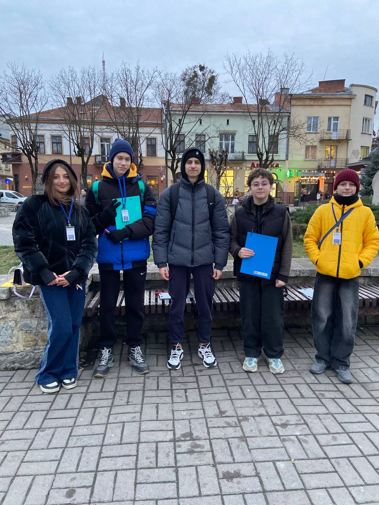

. The design should feature a bold and heroic theme with medieval or fantasy elemen 1.png)
Шлях до себе через шлях героя.
Досліджуй фільми, відкривай себе!
Про проєкт
Ознайомитись з шляхом героя через фільми,навчитись працювати з Figma,дойти до кращої версії себе
- 1.Виклик
- 2.Прийняття виклику
- 3.Вирішення проблеми
- 4.Невдача
- 5.Відкат назад
- 6.Трансформація
- 7. Новий я
Для початку я проаналізувала свої улюблені фільми і шлях героя до них,обрала дизайн для проєкту,підбірка шрифтів,фото, ефектів ,стиль до шрифтів(bold,italic)
Мої улюбленіф фільми:


Про фільм: Гадкий я 4
Жанр: Мультфільм, комедія, пригоди
Тривалість: ~90 хв
Рік випуску: 2024
У четвертій частині пригод Ґру, Міньйони та їхня сім'я знову опиняються у вирі шалених подій. На цей раз Ґру стикається з новими ворогами і несподіваними викликами, які змінять його життя назавжди!
Про фільм: Шрек
Жанр: Мультфільм, пригоди, комедія
Тривалість: 90 хв
Рік випуску: 2001
Шрек – це захопливий мультфільм про доброзичливого велетня, який вирушає в подорож, щоб врятувати принцесу Фіону. Разом із балакучим Оселом вони стикаються з безліччю пригод, які змінюють їхні життя назавжди.
Про фільм: Я, Побєда і Берлін
Жанр: Драма, пригоди
Тривалість: ~100 хв
Рік випуску: 2022
Історія про молодого музиканта Кузьму, який разом із другом вирушає на легендарному автомобілі "Побєда" до Берліна. Дорога сповнена пригод, випробувань і несподіваних відкриттів, які змінюють його світогляд і ставлення до життя.
Вплив фільмів на соціум

Висновок
Висновок Згідно з відповідей людей то найбільше всім подобаються жанр трилери. Більшість людей думають що фільми впливають на їхнє життя томущо наприклад їх мотивують побачити світ новими очима, розширити їх світогляд а з іншої сторони є люди які заперечують томущо їм подобається наприклад просто красива картинка.